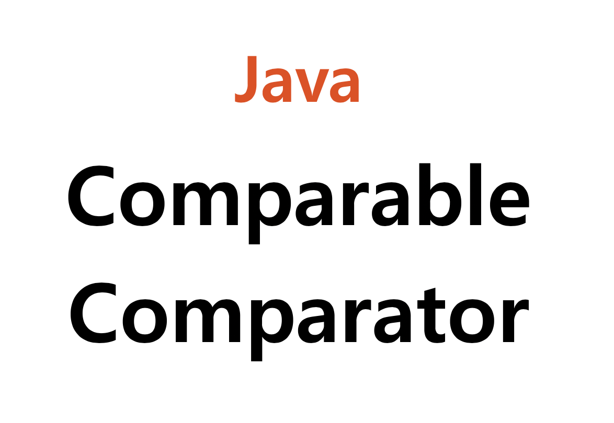

Java의 Comparable과 Comparator

개요
- 배열 안의 요소 정렬
- 객체들의 정렬
ComparableinterfaceComparatorinterface
- 예제
1. 배열의 안의 요소 정렬
배열 안의 요소는 Java API에서 제공하는 sort()메서드를 이용하면 쉽게 정렬이 가능합니다.1
2
3
4
5int[] nums = {4, 1, 3, 2, 5};
Arrays.sort(nums); // 결과: 1, 2, 3, 4, 5
String[] strs = {"D", "A", "B", "E", "C"};
Arrays.sort(strs); // 결과: "A", "B", "C", "D", "E"
이렇게 정렬이 가능한 이유는 각 요소를 비교할 수 있기 때문입니다. 1보다는 2가 크고, A보다는 B가 크죠.
하지만 아래와 같은 Student 인스턴스가 여러게 있다면, 과연 어떤게 ‘먼저’ 일까요?1
2
3
4
5public class Student {
public String name;
public int age;
...
}
2. 객체들의 정렬
사용자가 생성한 임의의 객체들을 정렬하기 위해서는 기준이 필요합니다. 즉 객체의 비교가 가능하다면 정렬을 할 수 있게됩니다.
어떤게 더 큰지, 어떤게 더 먼저인지 비교가 가능하다면, 그 기준에 따라 정렬이 가능하죠.
Comparable interface
그 기준을 정의하기 위해서는 해당 class에 Comparable interface를 구현현하는 방법 이 있습니다. CompareTo()메소드를 오버라이드 하여 인스턴스에 대하여 비교 기준을 정의해야 합니다.
Comparable은 정렬 수행시 기본적으로 적용되는 정렬 기준이 되는 메서드를 정의해 놓는 인터페이스입니다.
사실, 위에서 Arrays를 이용하여 정렬한 배열안의 요소(객체)를 포함한 대부분의 Java의 기본 자료형들은 Comparable interface를 구현하고 있습니다.
1 | // Integer class |
Comparable interface를 구현하여 Student의 객체들을 나이(age)순으로 정렬하고자 한다면, 다음과 같이 정의할 수 있습니다.1
2
3
4
5
6
7
8
9public class Student implements Comparable<Student> {
public String name;
public int age;
...
public int compareTo(Student o) {
return Integer.compare(this.age, o.age);
}
}
CompareTo()의 반환값이 양수라면 내부 정렬 알고리즘에서 두 요소를 비교할 때 자리를 바꾸고, 0이나 음수라면 바꾸지 않습니다.
1 |
|
Comparator interface
그렇다면 Student 객체들을 이름 순으로 정렬하고 싶다면? 나이 내림차순으로 정리하고 싶다면 어떡할까요?
정렬할 때 마다 Student class의 코드를 수정해야할까요?
이럴 때 쓰이는 것이 바로 Comparator interface입니다.
Comparator는 기본 정렬 기준(Comparable을 구현하여 정의한 기준)과는 다른 방식으로 정렬하고 싶을 때 사용하는 인터페이스입니다.
다른 기준의 정렬 조건을 정의하기 위해선 Comparator를 interface를 구현하고 compare()메서드를 작성해야 합니다. 여기서는 간단하게 익명 클래스(Anonymouse class)로 구현하겠습니다.1
2
3
4
5
6
7
8
9
10
11
12
13
14
15
16
17
18
19
20
21
22
23Student[] arr = new Student[5];
arr[0] = new Student("A", 26);
arr[1] = new Student("B", 27);
arr[2] = new Student("C", 27);
arr[3] = new Student("D", 21);
arr[4] = new Student("E", 20);
List<Student> students = new ArrayList<>();
for (Student student : arr)
students.add(student);
/* Comparator 익명클래스 정의 */
Comparator<Student> descNameComparator = new Comparator<Student>() {
public int compare(Student s1, Student s2) {
return s2.name.compareTo(s1.name); // 이름에 대하여 내림차순
}
};
// 기본 배열에서의 정렬
Arrays.sort(arr, descNameComparator); // 결과: E(20), D(21), C(27), B(24), A(26)
// List Collection에서의 정렬
Collections.sort(stdents, descNameComparator); // 결과: E(20), D(21), C(27), B(24), A(26)
이름을 내림차순으로 정렬하기 위하여 String의 비교 값을 출력하였습니다. 이와 같이 Comparator 인터페이스를 구현하면, 임의의 사용자 객체에 대하여 여러 종류의 기준으로 정렬이 가능합니다.
조건문을 통해 compare()메서드의 반환값을 제어해 준다면 정렬 기준을 중복하여 적용할 수 있습니다. 이는 Comparable 인터페이스의 compareTo()메서드도 마찬가지입니다.1
2
3
4
5
6
7
8
9
10// 나이 역순으로 정렬. 나이가 같다면 이름순으로 정렬.
Comparator<Student> myComparator = new Comparator<Student>() {
public int compare(Student s1, Student s2) {
if(s1.age == s2.age) {
return s1.name.compareTo(s2.name);
}
return Integer.compare(s2.age, s1.age);
}
};
3. 예제
위 설명을 기반으로 한 예제 코드입니다.1
2
3
4
5
6
7
8
9
10
11
12
13
14
15
16
17
18
19
20
21
22
23
24
25
26
27
28
29
30
31
32
33
34
35
36
37
38
39
40
41
42
43
44
45
46
47
48
49
50
51
52
53
54
55
56
57
58
59
60
61
62
63
64import java.util.*;
public class Main {
public static void main(String args[]) {
// Student 배열 인스턴스 생성
Student[] arr = new Student[5];
arr[0] = new Student("A", 26);
arr[1] = new Student("B", 27);
arr[2] = new Student("C", 27);
arr[3] = new Student("D", 21);
arr[4] = new Student("E", 20);
// Student List Collection 인스턴스 생성
List<Student> students = new ArrayList<>();
for (Student student : arr)
students.add(student);
// 기본 배열에서의 정렬(Comparable interface)
Arrays.sort(arr);
System.out.println(Arrays.asList(arr)); // E(20), D(21), B(27), A(26), C(27)
// List Collection에서의 정렬(Comparable interface)
Collections.sort(students);
System.out.println(students); // E(20), D(21), B(27), A(26), C(27)
System.out.println();
/* Comparator 익명클래스 정의 */
Comparator<Student> descNameComparator = new Comparator<Student>() {
public int compare(Student s1, Student s2) {
return s2.name.compareTo(s1.name); // 이름에 대하여 내림차순
}
};
// 기본 배열에서의 정렬(Comparator interface)
Arrays.sort(arr, descNameComparator);
System.out.println(Arrays.asList(arr)); // E(20), D(21), C(27), B(27), A(26)
// List Collection에서의 정렬(Comparator interface)
Collections.sort(students, descNameComparator);
System.out.println(students); // E(20), D(21), C(27), B(27), A(26)
}
}
class Student implements Comparable<Student> {
public String name;
public int age;
public Student(String name, int age) {
this.name = name;
this.age = age;
}
public int compareTo(Student o) {
return Integer.compare(this.age, o.age); // 나이에 대하여 오름차순
}
public String toString() {
return name + "(" + age + ")";
}
}